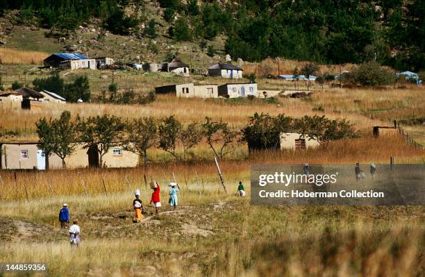

The Human Crisis
Drowning in Silence
The urgent need for water safety in rural KwaZulu-Natal.
Every summer, the rivers and streams of rural KwaZulu-Natal claim young lives — quietly, without headlines, and often without witnesses. The statistics are sobering.
KwaZulu-Natal holds the grim distinction of being the province with the highest incidence of drowning in South Africa, with 2,114 fatal drownings recorded between 2016 and 2021 — more than any other province in the country. Nationally, approximately 1,484 people drown in South Africa each year, and a devastating 29% — around 450 individuals — are children under the age of 14. These are not statistics about the ocean. The highest number of drownings across all settings occur in freshwater environments: rivers, streams, dams, canals, and wetlands.

Rural communities are particularly vulnerable. Children encounter farm dams, rivers, and streams daily, often without any formal swimming skills or water awareness. Research in northern KwaZulu-Natal found that accidental drowning was the second most common cause of injury death in children, after road traffic injuries. What makes this even more heartbreaking is how preventable it is. Older children are far more likely than younger ones to drown in rivers and public spaces — precisely the environments that surround rural communities in KZN every day.
The root of the problem is deeply tied to inequality. Contributing factors include a lack of drowning prevention initiatives, insufficient water safety awareness campaigns, and a complete absence of basic swimming skills. For many rural children in KZN, the concept of a swimming lesson is entirely out of reach — there are no pools, no instructors, and no safety nets. In remote areas like those along Inanda Dam and the uMngeni River, emergency services are often far away or simply unreachable when tragedy strikes.
The call to action is clear and urgent: swimming must be treated as a life skill, not a luxury. As NSRI drowning prevention coordinators have stated, this mission proves that swimming is no longer something for the privileged — it is something everyone needs to know. Encouragingly, organisations are responding. In 2024 alone, the NSRI delivered 877,485 water safety lessons and taught 25,000 survival swimming lessons across South Africa.
The scale of innovation is growing, but the need still dwarfs the response.
Innovative mobile Survival Swimming Centres — converted shipping containers fitted with heated indoor pools — have been deployed in rural communities including one on the KwaZulu-Natal South Coast near Port Shepstone, bringing lessons directly to children who would otherwise never have access.
Swimming South Africa's KwaZulu-Natal rollout has led national water safety initiatives, with grassroots programmes targeting vulnerable communities in KwaMashu and Durban — bringing learn-to-swim lessons and water safety workshops directly to local schools.
Working alongside community leaders to build sustainable educational programs, safe transport alternatives, and long-term water safety culture. Communities become partners, not just subjects.
Every child in rural KwaZulu-Natal who lives near a river, stream, or dam — which is to say, every rural child — deserves the basic, life-saving knowledge of how to stay safe in water. Teaching a child to swim is not a privilege. In KwaZulu-Natal, it is a matter of life and death.
This is exactly why we want to expand drowning prevention and swimming programmes throughout the whole of South Africa. With this documentary, we hope to raise enough funding to implement this vital idea: that every child needs the skill and knowledge of water safety. This must become a necessity — not a privilege.